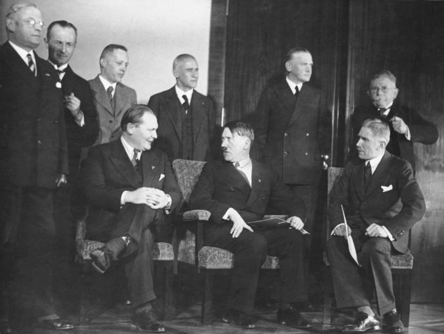
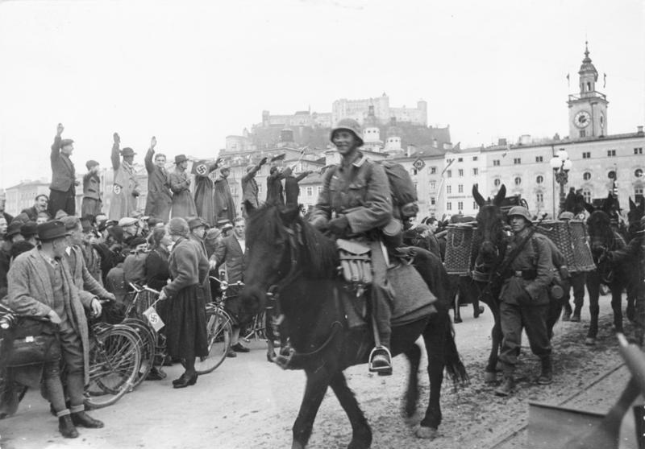
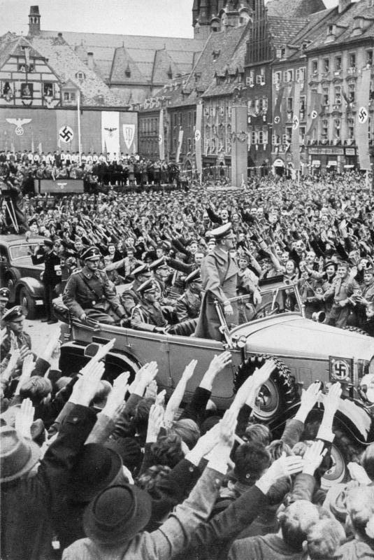
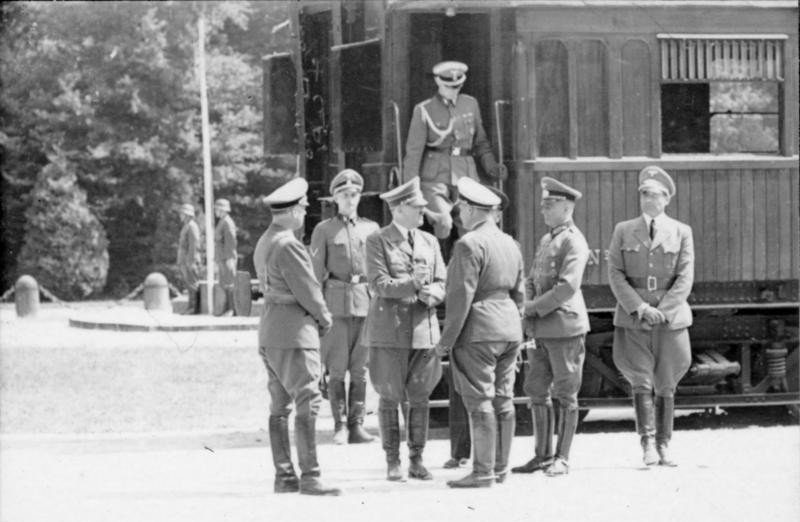
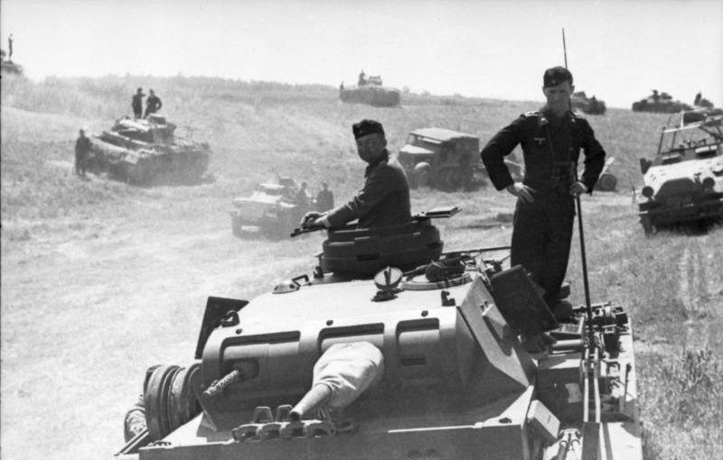
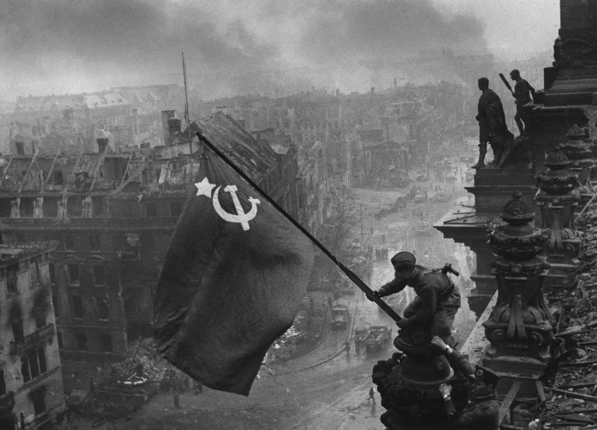

从希特勒崛起到第三帝国覆灭
从崛起到覆灭 · 四大阶段 · 二十八个关键事件
阿道夫·希特勒出生于奥地利布劳瑙一个海关官员家庭。童年时期在林茨度过，对艺术和建筑产生兴趣。
希特勒以陆军调查员的身份加入德国工人党（DAP），成为第七名党员。该党次年改名为国家社会主义德国工人党（NSDAP），即纳粹党。
希特勒与鲁登道夫在慕尼黑发动政变，企图推翻巴伐利亚政府。暴动被镇压，希特勒被捕入狱，在兰茨贝格监狱开始撰写《我的奋斗》。
希特勒在兰茨贝格监狱服刑仅9个月后获假释。出狱后他向巴伐利亚政府承诺遵守法律，很快重启纳粹党的重建工作。狱中口述的《我的奋斗》成为纳粹运动的理论基石。
希特勒在狱中撰写的《我的奋斗》（Mein Kampf）第一卷出版，系统阐述了纳粹意识形态、生存空间理论（Lebensraum）和极端反犹主义。
华尔街股市崩盘引发全球性经济危机。德国因依赖美国贷款而遭受重创，失业率从8.5%飙升至30%以上。社会动荡和经济绝望为纳粹党提供了崛起的土壤，纳粹党员人数从1928年的13万激增至1930年的80万。
国会选举中纳粹党得票率从2.6%飙升至18.3%，获得107个议席跃升为国会第二大党。希特勒通过大规模竞选造势和"希特勒飞越德国"巡回演讲，在青年、失业者和中下阶层中获得广泛支持。街头暴力冲突愈演愈烈。
希特勒在总统选举第二轮中获得36.8%的选票，不敌兴登堡的53%。虽然落败，但纳粹党在7月国会选举中获得37.4%的选票成为第一大党。经过冯·巴本和施莱谢尔两届短命内阁的政治僵局，兴登堡最终于1933年1月任命希特勒为总理。
从啤酒馆到总理府，希特勒用十年完成了从囚犯到独裁者的蜕变
总统兴登堡任命希特勒为德国总理。同年2月国会纵火案后，希特勒推动《授权法》通过，正式建立独裁统治。

柏林国会大厦被纵火烧毁。纳粹借机宣布紧急状态，大规模逮捕共产党人，废除基本公民权利，为独裁铺路。纵火者马里努斯·范·德·卢贝被处决。
希特勒以"清洗叛国者"为名，由党卫军执行对冲锋队（SA）领导层的血腥清洗。冲锋队领袖罗姆被处决，国防军从此效忠希特勒。8月2日兴登堡去世后，希特勒自任元首。
纳粹在纽伦堡党代会颁布《纽伦堡法案》，剥夺犹太人的德国公民权，禁止犹太人与德意志人通婚或发生婚外关系。系统性种族迫害的法律基础就此确立。
希特勒派兵进入凡尔赛条约规定的莱茵兰非军事区，公然违反《凡尔赛条约》和《洛迦诺公约》。英法仅提出外交抗议，未采取任何军事行动。
德国军队越过边境进入奥地利，受到许多奥地利人的欢迎。希特勒宣布德意志帝国与奥地利合并（Anschluss），奥地利成为"东区"（Ostmark）。

英法意德四国签署《慕尼黑协定》，将捷克斯洛伐克的苏台德地区割让给德国。绥靖政策达到顶峰，张伯伦宣称"我们时代的和平"。半年后德军吞并整个捷克斯洛伐克。

白色计划（Fall Weiss）实施，德军以闪电战战术入侵波兰。9月3日英法对德宣战，第二次世界大战正式爆发。波兰在两周内沦陷。
1939年9月，装甲部队越过波兰边境——第二次世界大战的帷幕拉开
德军首次大规模陆海空协同两栖作战。丹麦六小时投降，挪威抵抗至六月后沦陷。德国确保了瑞典铁矿石航线和北翼安全，但也为维持占领而分散了海军力量。
德军装甲部队穿越阿登山脉绕过马奇诺防线，六周内击溃法国——6月22日法国在贡比涅车厢签署停战协定。希特勒亲赴巴黎留影，达到个人声誉巅峰。戴高乐在伦敦建立自由法国，抵抗的种子得以留存。

德国空军对英国发动大规模空袭，试图摧毁皇家空军为入侵铺路。英国凭借雷达系统和扇形作战体系有效防御，希特勒于9月无限期推迟海狮计划——战争爆发以来首次重大受挫，也是英国独自抵抗的荣耀时刻。
德国撕毁《苏德互不侵犯条约》，以300万大军分三路入侵苏联。希特勒宣称"我们只要踢开门，整个腐朽建筑就会倒塌"。初期取得巨大战果，但苏联的辽阔纵深、泥泞道路和严酷寒冬使攻势在莫斯科城下停滞——闪电战宣告破产。

日本联合舰队偷袭珍珠港。希特勒对美宣战——这是他最致命的战略误判之一。美国正式加入二战，以其巨大的工业产能决定了战争的天平。希特勒曾指望日本的牵制作用，却迎来一个无法战胜的对手。
1941年冬，百万德军在莫斯科城下冻僵——闪电战神话在苏联的寒冬中破灭
海德里希在柏林万湖主持高级别会议，协调"犹太人问题的最终解决方案"。会议确定了系统化、工业化的灭绝计划，直接导致大屠杀的全面展开。
第六集团军在斯大林格勒被苏军反包围，希特勒禁止突围或投降。保卢斯元帅率残部投降——德军史上首次大规模投降。希特勒为此暴怒，东线主动权彻底易手。战后，戈培尔在柏林体育宫发表"全面战争"演说，号召全民总动员。
戈培尔在柏林体育宫发表著名的"你们想要全面战争吗？"演说，两万名听众齐声回应。此时德军刚在斯大林格勒投降，后方士气动摇——纳粹宣传机器开足马力，宣布全民总动员并关闭所有"非必要"娱乐场所。这是政权走向崩溃的转折信号。
罗斯福、丘吉尔、斯大林在德黑兰首次会晤，确定1944年开辟西线第二战场的时间表，并讨论战后德国分区占领和波兰边界问题。三巨头达成基本共识——希特勒寄望的盟军内部分裂并未出现，德国的命运在这一刻已被注定。
盟军史上最大规模的两栖登陆作战——霸王行动。15万士兵在D-Day当天登陆诺曼底五处海滩，西线第二战场正式开辟。希特勒的"大西洋壁垒"一天内被突破，德国陷入东西两线作战的绝境。巴黎于8月25日解放，欧洲战局进入最后阶段。
施陶芬贝格上校在"狼穴"引爆公文包炸弹，但希特勒因会议桌遮挡仅受轻伤。政变失败，约5000名参与者被捕处决，隆美尔被迫服毒自尽。
苏军以250万兵力攻入柏林。希特勒在总理府地堡与爱娃·布劳恩举行最后婚礼后自杀，遗体被焚毁。5月8日德国无条件签署投降书，第三帝国覆灭。希特勒的"千年帝国"仅存在了12年又4个月，留给欧洲一片废墟和数千万亡灵。

视频：二战历史年表 · 来源：b站@历史调研室